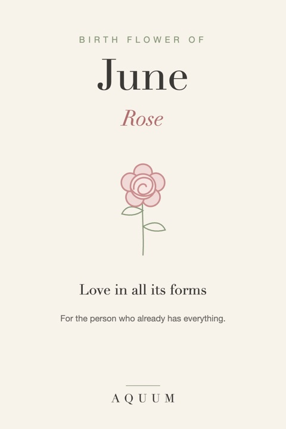

June Birth Flower: Rose Meaning and What Each Color Says
2026-09-30
Written by the team behind Aquum, a small birth flower gift shop. How we make money.

June's birth flowers are the rose and the honeysuckle. The rose is the most famous flower in the world, which makes it easy to give and easy to give without thinking. Its meaning is where it gets interesting.
What the rose means
The rose stands for love in all its forms, and the color decides which form:
- Red: romantic love
- Pink: gratitude and admiration
- Yellow: friendship and joy
- White: respect, new beginnings
- Orange: enthusiasm and desire
Choosing the color is the gift. A yellow rose for a best friend says something a red one never could.
The honeysuckle, June's second flower
The honeysuckle means devoted affection and the bonds of love. Its vines wrap around whatever they grow on, which is exactly the point.
More in our full honeysuckle guide.
Who the rose suits
- Anyone born in June, in the color that fits your relationship
- The person who already has everything
- A friend you want to thank for years of friendship
June birth flower gift ideas
- A rose shirt, mug or tote, with a note about what the color means.
- A rose bush for the garden: a gift that comes back every June.
- Honeysuckle for a partner, if you want something less expected than a rose.
The rose is the flower "for the person who already has everything." More ideas in gifts for the woman who has everything.
Comparing colors across flowers? See our guide to birth flower color meanings.
Shopping for a June birthday? See our June birthday gift ideas.